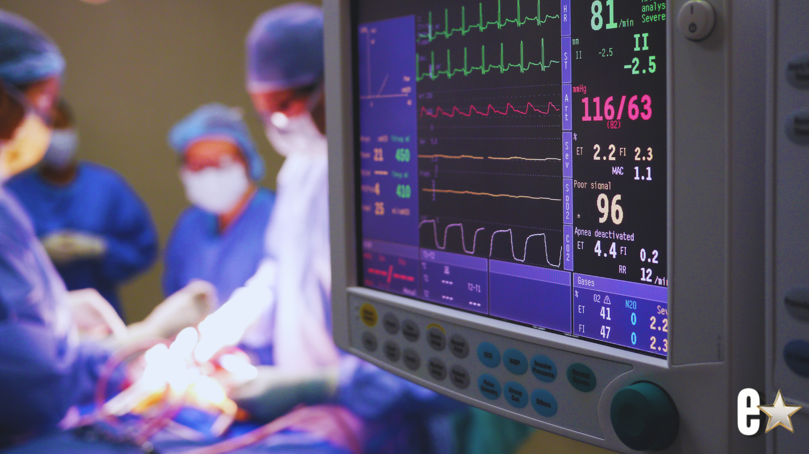

Cardiac Event Monitoring
Cardiac Event Monitoring
Cardiac event monitoring is designed to capture ECG information associated with intermittent symptoms or automatically detected rhythm events over an extended monitoring period. Depending on the prescribed configuration, an event may be initiated by the patient, detected by the device, or both. The resulting ECG information supports physician evaluation of symptoms that may not occur during a short Holter study.
How Event Monitoring Works
Event monitoring configurations may use continuous recording, loop memory, patient-triggered events, automatically detected events, or a combination. The exact behavior depends on the prescribed device and service setup — not every feature is enabled in every configuration.
- Symptom occursPatient notices palpitations, dizziness, or other symptoms
- Event markedPatient marks the event when instructed
- ECG capturedSegment is stored or transmitted
- Event reviewedReviewed within the monitoring workflow
- Report / notificationFollows the prescribed workflow
When Event Monitoring May Be Considered
Examples may include intermittent palpitations, dizziness, brief symptoms, or suspected rhythm events that are not expected every day. The physician determines whether event monitoring, Long-Term Holter, or MCT is the appropriate test.
Event monitoring depends in part on correct device use and timely symptom marking when patient activation is part of the prescription.
Patient-Triggered and Automatic Events
Patient-triggered events help correlate symptoms with the ECG at that time. Automatic detection can capture selected rhythm patterns even when the patient does not press the symptom button. Automatic detection is not perfect and not every event is guaranteed to be recognized.
Marking symptoms
Mark symptoms as soon as practical after they begin, record what was felt and what you were doing, and follow the study instructions for confirming the event was captured.
- Symptom occurs
- Patient marks the event
- ECG segment is stored or transmitted
- Event is reviewed per protocol
Emergency symptoms
Patients with chest pain, severe shortness of breath, fainting, stroke symptoms, or other urgent symptoms should follow their physician’s instructions and seek emergency assistance — call 911 — rather than waiting for a monitoring call.
Reporting and Physician Communication
Event reports and notifications are handled according to the prescribed monitoring protocol. Routine event documentation is distinct from findings that meet the physician’s notification criteria.

Event Monitoring Compared With MCT and Holter
All four test types provide LIVE operational visibility while the study is in progress. Event Monitoring emphasizes episodic capture and can present qualifying findings during the test. MCT provides broader in-progress clinical surveillance and protocol-based presentation of qualifying findings. Holter and Long-Term Holter provide continuous recording, but clinical results are presented after the final report is generated.
Every Specialized Medical test provides LIVE test-status visibility while the study is in progress. Specialized Medical can see operational information such as battery level, electrode contact and signal quality, whether the monitor is communicating, and whether the patient appears to remain properly connected. When a parameter falls outside the expected range, Specialized Medical contacts the patient and works with the patient to correct the issue so the study has the best opportunity to be completed successfully. The distinction between test types is not whether the study is visible live; it is when clinical findings are presented. For Holter and Extended / Long-Term Holter, clinical results are presented after the final report is generated. For Event Monitoring and Mobile Cardiac Telemetry (MCT), qualifying clinical findings are presented while the test is in progress according to the prescribed notification protocol.
| Monitoring Type | Typical Duration | LIVE Test-Status Visibility | Clinical Findings Presented | Best Suited For |
|---|---|---|---|---|
| Holter Monitoring | 24–48 hours | Yes | After Final Report Is Generated | Frequent symptoms and short-term rhythm assessment |
| Extended / Long-Term Holter | 3–14 days | Yes | After Final Report Is Generated | Intermittent symptoms requiring a longer recording window |
| Cardiac Event Monitoring | Up to 30 days | Yes | During Test — According to Prescribed Notification Protocol | Intermittent symptoms that may require patient or automatic event capture |
| Mobile Cardiac Telemetry (MCT) | Up to 30 days | Yes | During Test — According to Prescribed Notification Protocol | Patients who may benefit from continuous remote rhythm surveillance |
Frequently Asked Questions
It is an ambulatory ECG monitor designed to capture rhythm information associated with intermittent symptoms or selected automatically detected events.
The prescribed period may extend up to 30 days, depending on the physician’s order and monitoring setup.
In many event-monitoring workflows, the patient marks symptoms as instructed. Some configurations may also detect selected events automatically.
Automatic detection may capture some rhythm events, but patients should follow the symptom-marking instructions whenever possible.
No. Both MCT and Event Monitoring have LIVE operational visibility and can present qualifying clinical findings during the test. MCT generally provides broader continuous remote clinical surveillance, while Event Monitoring emphasizes episodic recordings and may use a different notification workflow.
No. Communication depends on the prescribed criteria and practice protocol.
The monitor records ECG information. The physician determines whether the rhythm correlates with the patient’s symptoms.
Follow emergency instructions and call 911 when appropriate. Do not wait for a monitoring-center call.
Patients should follow the activity and device-care instructions provided for the prescribed monitor.
The final report may summarize captured events, rhythm findings, symptom correlations, representative strips, and other study measurements.
Request Event Monitoring Information
Specialized Medical can review the practice’s current ambulatory cardiac monitoring workflow, explain the available service options, and demonstrate how enrollment, monitoring, reporting, and physician review can be configured.
Prefer to talk? Speak With a Cardiac Monitoring Specialist — 1-855-SPEC-MED (1-855-773-2633)
Specialized Medical provides diagnostic ambulatory monitoring. The system is not a replacement for emergency medical services. Patients with urgent symptoms should call 911 or follow emergency instructions rather than waiting for a monitoring call.
Related Cardiac Monitoring Resources
Diagnostic Service Disclaimer: Specialized Medical provides ambulatory cardiac monitoring services and diagnostic information for review by qualified healthcare providers. The service does not replace physician judgment, emergency medical services, or instructions to call 911 when urgent symptoms occur.